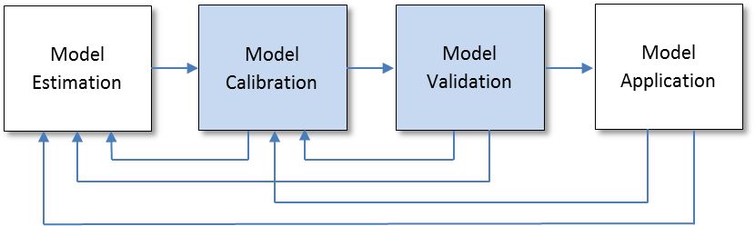

Model calibration and validation
Travel models are typically defined as a set of mathematical formulae and relationships, being used in an attempt to reflect an open system – the real world populated by people who are responding to influences that are constantly changing, do not always make rational decisions, and whose responses to influences affecting travel are not always the same. Since travel models (and travel modelers) cannot be omniscient, there will always be missed information and abstractions resulting in less than perfect models. Travel model calibration can be defined as the approach and methods used to make travel models reasonably reproduce a snapshot of travel in the modeling area. Travel model validation can be defined as the approach and methods used to demonstrate that travel models have reasonable sensitivities and will provide reasonable forecasts of travel based on alternative conditions or assumptions regarding the population or transportation system.
# Background
The Figure below shows the overall travel demand model development and application process. Model calibration and validation take place between model estimation and model application. Once the model is estimated, small adjustments are made until the model accurately replicates observed patterns and behavior. Then the model is validated to a different set of observed data (for example, traffic counts) than was used for model estimation or calibration.
As part of the process, model calibration and validation generally occur in an iterative fashion. Model validation may reveal the need to return to the model estimation or model calibration steps. The application of the model using future year conditions requires that the model forecasts are reasonable and consistent with expectations and also might reveal a need to return to the model estimation or calibration step.

Several definitions are necessary to understand the roles and purposes of travel model calibration and validation:
- Model estimation is the use of statistical analysis techniques and observed data to develop model parameters or coefficients
- Model assertion is the declaration of model forms or parameters without the use of statistical analysis of observed data
- Model calibration is the adjustment of constants and other model parameters in estimated or asserted models in an effort to make the models replicate observed data for a base year or otherwise produce more reasonable results
- Model validation is the application of the calibrated models and comparison of the results against observed data; ideally, the observed data are not the same data used for model estimation or calibration
- Model sensitivity testing is the application of the models and the model set using alternative input data or assumptions to determine if the model results are plausible and reasonable
In the past, model calibration and validation have been used to basically describe the same action. Further, models have been asserted to be "valid" based on achieving a rather arbitrary set of standards, such as obtaining a regional coefficient of determination (R^2^) of 0.85 for the match between modeled and observed traffic volumes. While the use of statistical measures to summarize model results can be very useful, matching a set of arbitrary standards does not guarantee that a model will be useful for travel forecasting. Indeed, a model might be calibrated to closely reproduce observed traffic volumes or transit ridership under base conditions but be so insensitive that it would be useless for analyzing changes in development patterns or the transportation system.
The Travel Model Validation and Reasonableness Checking Manual - Second Edition (revised), describes improved practices and approaches to travel model calibration and validation. The manual refocuses travel model validation on the sensitivities and reasonableness of travel models as well as their abilities to reproduce observed travel under a base condition.
# Past Practices
Previously the calibration and validation process was focused only on the overall results of the travel model, without detailed checking of interim model steps. However, this approach often leads to the problem of “error propagation”. Error propagation occurs when errors made in each step are compounded and thereby increase the overall modeling errors.
# Current Practice
Due to the nature of travel demand models, it is important that model calibration and validation take place at each step in the travel demand model development process, after estimation and assertion of the model parameters. In best practice modeling, each model component is subjected to a series of checks and reasonableness tests to make sure that each component reasonably reproduces observed travel characteristics. A good way to accomplish this is through a structured, Stepwise Model Calibration/Validation process. The overall model is validated to ensure that each is properly interfaced and that any modeling error is not propagated by chaining the models together. It is very useful to develop a model validation plan at the outset of a model development or update process to guide the model validation and help ensure that necessary validation data are available.
# Additional Information
See the following pages for additional information:
# Input Data
There are two types of input data required for travel demand modeling:
- Socioeconomic data.
- Transportation network data
Since these input data are the basic building blocks along with the travel demand models to forecast travel in a region, the success or failure of the modeling process rest largely on the quality of the input data. Therefore, the checking of input data is extremely important.
Socioeconomic Data
Socioeconomic data includes population, households classified by variables such as number of persons, number of workers, income level, and / or auto ownership, school enrollment, and employment data classified by industry type such as retail, manufacturing, service, etc.
This starts with a simple inspection of the data through the use of thematic mapping. It is usually recommended that checks be performed at the TAZ, district, and regional level. Basic checks include mapping and review of population, households, average household size, proportions of households by income level or auto ownership, employment, and employment by category. Various ratios should also be created and reviewed including persons per household, vehicles per household, workers per household, vehicles per worker, population/employment, and income ratios (zonal average income/regional average income). Anomalies, such as zero population and non-zero households, or very low or non-existent employment in a TAZ surrounded by employment, should be checked. For forecast data, trends in the data and derived statistical measures over time for the region should be reviewed to identify any unusual or extreme changes, and corrections should be made where necessary.
The main sources of socioeconomic data are Census data, American Community Survey (ACS) data, Quarterly Census of Employment and Wages (QCEW) data, and market research listings, such as InfoUSA or Dun & Bradstreet.
Transportation Network Data
Transportation network data represent highway, transit, and other non-motorized mode networks and their attributes.
For the first level of validation testing, color coded plots of the following network attributes should be produced and reviewed:
- Facility type,
- Functional class,
- Number of lanes,
- Posted speed,
- Area type,
- Capacity, and
- Direction of flow.
Other important checks include network connectivity and path testing. This process will identify dangling links, disconnected link segments, incorrectly coded one-way links or ramps, and disconnected nodes. Highway and transit network paths (or skims) are useful for creating time contours between locations of interest. Contour maps can be analyzed to ensure that all centroids with particularly long or short travel times as compared to surrounding centroids are properly connected to the line layer and that all surrounding links are properly coded.
The main sources of transportation network data are Census Bureau Topologically Integrated Geographic Encoding and Referencing (TIGER) files, Regional or local GIS/planning agencies, or commercial distributors.
# Trip Based Models
Model calibration requires household travel survey data to adjust the model to match observed trip generation rates, trip length frequency distributions, aggregate trip movements, and mode shares. Model validation could include some components of calibration if household survey data are available; however, survey data are not required in adjusting the model to match traffic counts.
The following sections describe the common calibration and validation checks for each modeling step.
# Trip Generation Models
Since trip generation models consists of three components: trip production, trip attraction, and trip balancing, calibration and validation checks should be conducted for each of the three components.
Trip Productions
Once the initial trip production model is estimated, the trip productions by purpose are calculated and summarized by zone. The total productions by purpose should be then compared with expanded totals from a household travel survey. Since the household travel survey data is used in the model estimation, it is expected that these two area production totals match. Therefore, it is a good idea to check the model results against other sources such as CTPP or ACS data to ensure that the overall productions are in line with observed aggregate estimates. In addition, overall trip rates per household, trip rates per household by purpose, and percentage of trips by purpose should be compared with results from household travel surveys. If no household travel survey exists, trip rates should be compared to results from other comparable areas or from the National Household Travel Survey (NHTS) for reasonableness.
Trip Attractions
Unlike trip productions, there are few resources for checks of trip attractions, due to a lack of work place surveys that are used to calculate attraction rates. One common check is to compute the number of home-based work attractions to the total employment by zone. Since some workers do not work every workday, the reasonable range is between 1.20 and 1.55 home-based work attractions per employee.
Trip Balancing
Once the trip productions and trip attractions are estimated, their totals by purpose should be compared. In theory, the estimated total trip productions must be equal to the total trip attractions for each trip purpose, because every trip has one production end and one attraction end. However, since trip production and attraction models are independently developed, this equality is not guaranteed. The ratio of area productions to attractions by purpose should be between 0.9 and 1.1 before balancing. If there is not a close match, the reasons for the lack of match should be investigated.
# Trip Distribution Models
There are two types of calibration and validation checks usually conducted for trip distribution models: trip length checks and travel pattern checks. Household travel survey data is usually required for these checks and CTPP journey-to-work data is a supplementary source for home-based work trips.
Trip Length Checks
The average trip length and trip length frequency distributions by purpose are compared between model results and observed data from the household travel survey. Trip lengths should be checked in both distance and time units. Since trip length information reported in household travel survey is not reliable, observed average trip length and trip length frequency distributions are usually computed from the trip table obtained from the expanded household travel survey data using the time and distance skims.
If the modeled and observed average trip lengths by purpose are within 5%, this is typically considered reasonable.
Coincidence ratios are used as a measure of how close the estimated trip frequency distribution is to the observed distribution. The coincidence ratio measures the percent of total area in common between two distributions. The coincidence ratio lies between 0 and 1, where a ratio of 0 indicates two disjoint distributions and 1 indicates identical distributions. It is preferable to have 0.7 or higher coincidence ratio for each purpose.
Travel Pattern Checks
The basic check for travel pattern is the comparison of district-level trip interchanges by purpose. Although zone-level comparison is desirable, limited sample sizes of household travel surveys do not allow a comparison of trip interchanges at a zone level. The estimated trip table from the model is compared to observed trip table from expanded household travel survey at a district level to check origin-destination travel patterns. This comparison can be useful in determining the reasonableness of trip distribution results as well as in assessing the possible need for K-factors. K-factors account for physical or socioeconomic barriers that affect trip making, but are not represented in the model, such as a river crossing. K-factors are usually not recommended and should be used as a last resort after all other possible causes for error and calibration adjustment have been considered.
A validation measure of travel patterns is the orientation ratio. This ratio measures the propensity of trips from a production area to the attraction area. A value of less than 1.0 indicates that the production area is less orientated to the attraction area than is the region as a whole, while a value of greater than 1.0 indicates the opposite. The ratios of the modeled to observed district-level orientation ratios can be used to check trip distribution results. The closer the ratios are to 1.0, the better the model is reproducing observed trip distribution pattern.
Another check of travel patterns is the amount of intrazonal trips. The modeled percentage of intrazonal trips by purpose should be compared to the observed percentages of intrazonal trips from the expanded household survey. If the modeled percentage of intrazonal trips is within 3 percentages of observed for each purpose, it is usually considered reasonable.